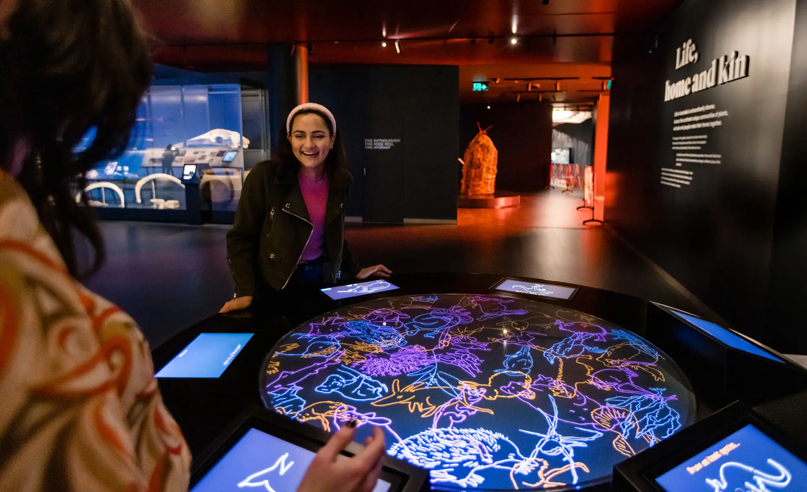
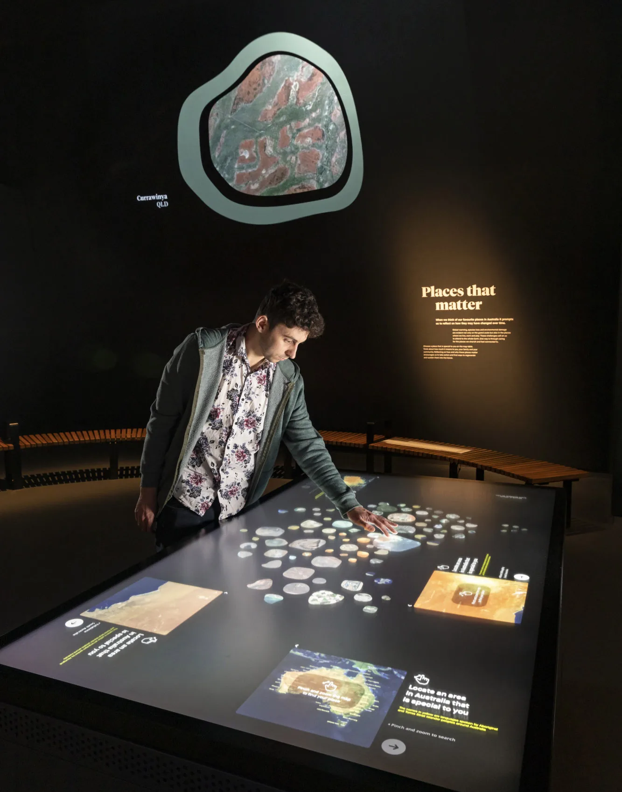
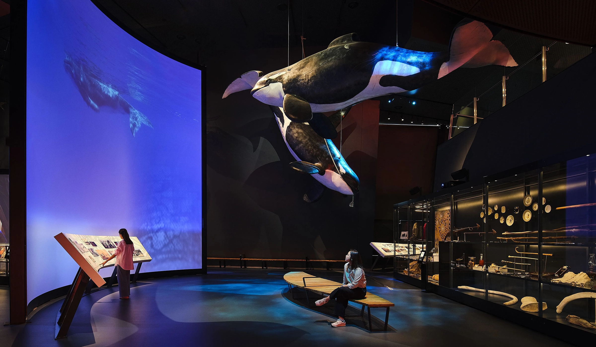
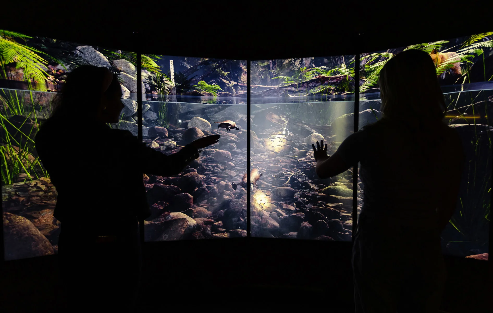
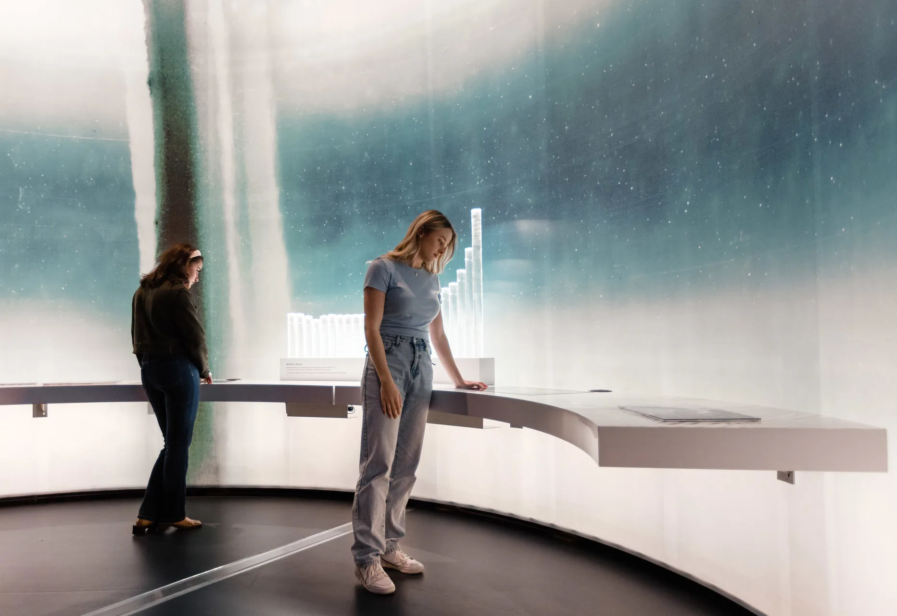
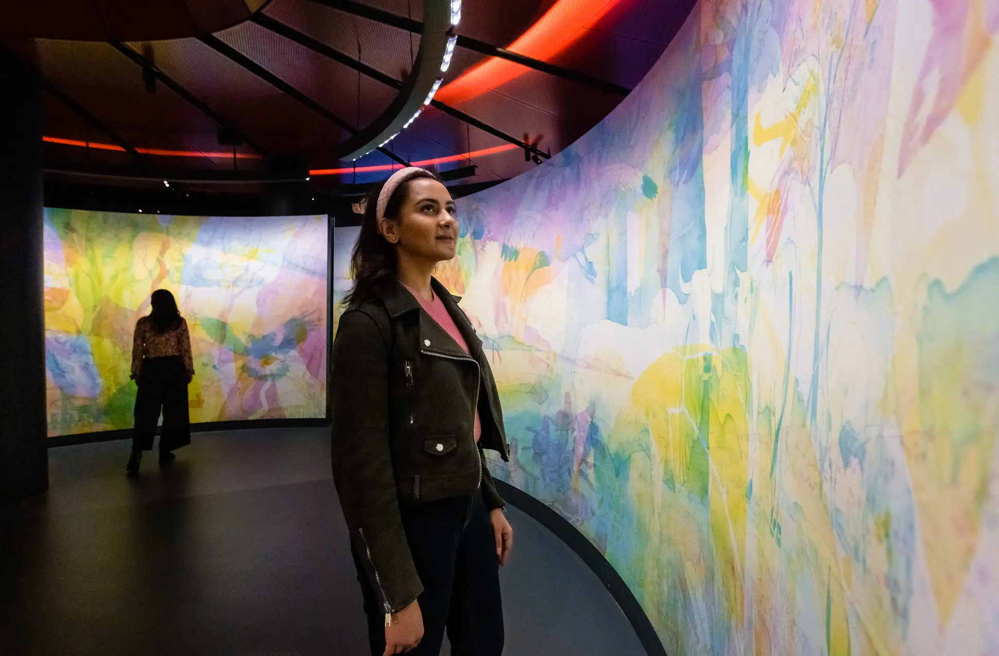

National Museum of Australia
Canberra, Australia
Great Southern Land repositions the central gallery at the National Museum of Australia as an immersive exploration of Australia's environmental past, present and future.
I led the concept and design of five interactive installations that form a core part of the exhibition. Each one responds to its room, its theme and its emotional register.

Visitors draw new species into a shared digital ecosystem. They move through a 3D platypus world built in Unreal Engine. They experience light installations that reveal layered imagery through shifting colour. The final interactive invites visitors to locate themselves on a map of Australia and generate a personal memento tied to place.

Themes of connection, power and change anchor the journey. The exhibition celebrates Australia's biodiversity while confronting climate fragility, water stress and environmental transformation. It shifts the narrative from observation to responsibility.


Interactive platypus environment where motion and gesture allow visitors to explore the underwater habitat of one of Australia's most iconic species.
Visitors explore the historical changes of our planet through ice cores that provide continuous climate records going back as far as a million years.

'Heartbeat', an RGB light space where the illustrations of Matt Chun evolve based on lighting.

Taken together, the installations shift visitors from looking at Australia’s environment to locating themselves within it. The aim was to make the exhibition something people move through, contribute to and leave with.